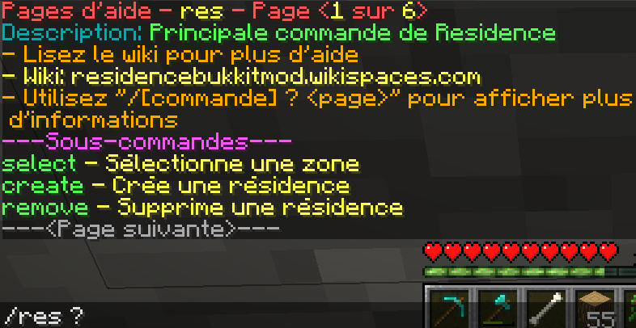
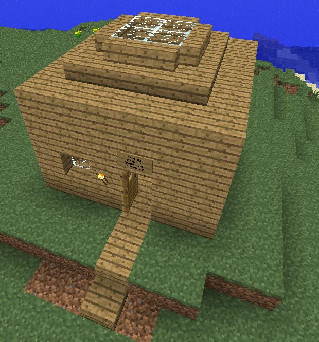
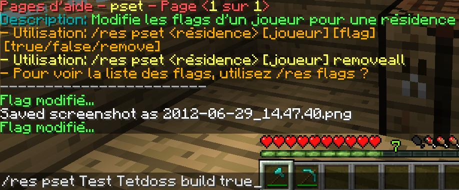

Les résidences
Nous voici dans un sujet très complexe à expliquer correctement et j’espère grave à ces explications et à ce tutoriel ci-dessous que vous comprendrez comment fonctionne les résidences sur le serveur.
Commençons par les quelques commandes à connaitre dans un premier temps. Si vous avez besoin d’information supplémentaire sur les résidences je pense que ce qu’il y a si dessous sera vous satisfaire un minimum :
"/res ?" Comme vous pouvez le voir il y a trois commande principal que nous allons voir ci-dessous, mais prêtez aussi attention au fait qu’il y a plusieurs pages à regarder, donc n’oublier pas de faire attention aux nombres de page disponible car la commande que vous recherchez se trouve peut être parmi ces pages.
"/res select ?" Vous pouvez qu’il y a une deuxième page et que plusieurs commande sont disponible avec le res select et la traduction en français me simplifie le travail sur le coup regardons ceci a présent :

"/res create ?" Pas grand-chose pour cette commande mais elle permet tout de même de donner un nom à votre résidence. En dernier je vous fais voir cette commande ci :
"/res remove ?" Vous pouvez voir une autre commande particulièrement utilise si vous vous tromper elle permet de supprimer une résidence.
Je sais que tout ce que j’ai dit plus haut est très vague mais je devais vous faire voir comment utiliser les commandes si vous aviez besoin de plus d’information, passons maintenant à un tutoriel complet pour vous apprendre à protéger votre maison :
Cette charmante maison bâti en 2min va nous servir d’exemple je vais la protéger est donc vous montrez pas à pas comment faire. Tout d’abord il faut sélectionner deux points.
Comme vous pouvez le voir il faut sélectionner les points avec une flèche sinon cela ne marche pas. Un click gauche pour le premier point, de plus voyer que j’ai creusé en dessous du sol permettant ainsi de protéger le plancher de ma maison.
Et là un deuxième point avec le clic droit et voyer aussi que j’ai créé un espace d’un bloc autour de la maison que ça soit en hauteur ou sur les côtes, cela permet d’éviter aux autres joueur de mettre des pancartes ou de planter des arbres ou quoi que ce soit qui puisse vous gênez en face de votre maison (naturellement à vous de gérer l’espace dont vous avez besoin mais je pense que un bloc d’espace est un minimum).
Ensuite vous devez créer votre résidence mais si vous ne le savez pas je vous le dit maintenant créer une résidence a un prix et donc après avoir sélectionné vos deux points pour ne pas avoir de surprise faite :
Ensuite seulement après avoir était sûr que le prix vous convenez vous pouvez faire ceci :
Et voilà nous avons protégé une maison avec succès vous avez même un message lorsque vous rentrez dans votre propriété et les autres joueur le voie aussi.
Passons maintenant à tout ce qui peut être accessoire pour vous et pourtant si utile regarder :
Voyez-vous les flags ? Ce sont les permissions admise ou non dans votre résidence et tous les flags commençant par un – ne sont pas permis dans votre résidence, tandis que ceux avec un + sont permis. Je vous vois venir et non vous ne pourrez pas désactiver les dégâts que produisent les Creepers, c’est obligatoire malheureusement.
Je vais vous montrer l’utilisation de deux de ces flags :
Cette commande vas vous permettre de modifier le message que vous pouvez voir lorsque vous rentrer dans votre résidence. Comme vous pouvez le voir ici vous verrez lorsque vous entrerez dans ma résidence nommée Test le message : "Test pour le site de Draxxo". Et vous pouvez aussi mettre un message diffèrent lorsque vous sortez avec le flag : "Leave".
Je vais vous montrer une commande pour vous permettre de permettre à un joueur de faire une action dans votre résidence :
Pour rajouter un joueur a sa résidence il faut toujours : "/res pset". Dans cet exemple vous pouvez voir que j’ai donné l’autorisation à Tetdoss de construire dans ma résidence. Il y a beaucoup d’autre flag disponible pour tous les consulter taper : "/res flags".
J’espère que ce tutoriel vous aura suffisamment aidé et j’espère avoir réussi à expliquer correctement l’utilisation des commande principal mais si vous voulez voir tous les commande disponibles en jeu aller sur ce site : Commande résidence.
Remarque : Toutes les commandes écrites sur le site donné ne sont pas toute utilisable en jeu.